งานคลิปส่วนใหญ่ไม่ใช่การตัดคลิป
ทำคลิปสั้นขายของได้หนึ่งชิ้น มีงานรอบตัวอีกเป็นสิบอย่าง และหลายอย่างต้องเกิดตอนตีสาม
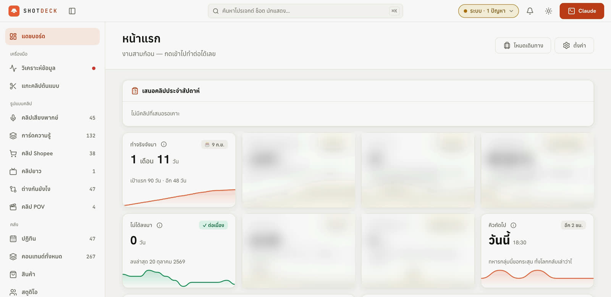
ผมจะเอาตัวเองไปวางในการตัดคลิปเท่านั้น ที่เหลือให้ระบบทำ ทั้งพากย์ เรนเดอร์ ตรวจ ตั้งเวลา โพสต์ ตอบคอมเมนต์ และสรุปผลให้อ่านตอนเช้า
งานทั้งหมดผูกอยู่กับ Mac เครื่องที่ใช้ทำงาน
ก่อนย้าย มีงานตั้งเวลา 12 ตัวรันอยู่บน Mac ถ้าพับจอหรือหยิบเครื่องออกจากบ้าน งานตอนกลางคืนก็ไม่เกิด
งานที่ต้องเกิดตอนไม่มีใครตื่น
คลิปสินค้าตอนตีสาม สำรองไฟล์ตอนตีสี่ ตอบคอมเมนต์ตอนห้าทุ่มครึ่ง ถ้าพังกลางทางก็ไม่มีใครเห็นจนเช้า
ออกนอกบ้านแล้วสั่งงานไม่ได้
อยากเดินทางได้โดยที่ช่องไม่เงียบ แต่ทุกอย่างอยู่ในเครื่องที่บ้าน และเปิดพอร์ตออกอินเทอร์เน็ตตรง ๆ ก็ไม่ปลอดภัย
โพสต์ 5 แพลตฟอร์มด้วยมือ ทุกวัน
แต่ละที่อัปโหลดคนละวิธี บางที่ต้องโพสต์จากมือถือเท่านั้น ลิงก์ต้องไปอยู่ในคอมเมนต์ปักหมุด ทำเองทุกวันคือทั้งช้าและพลาดง่าย
เครื่องเฉพาะที่บ้าน ดีกว่าเช่าคลาวด์และดีกว่าบังคับ Mac ไม่ให้หลับ
ข้อจำกัดจริงคือ ต้องมี GPU ต้องมีเบราว์เซอร์ที่ล็อกอินค้างไว้ และต้องเสียบมือถือ Android ตัวจริงได้
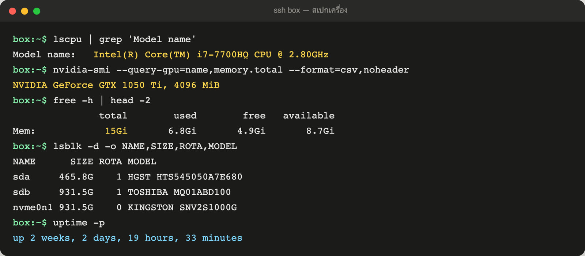
| ทางเลือก | ได้อะไร | ต้นทุน | เหตุที่ตก / รับ |
|---|---|---|---|
| เช่า VPS บนคลาวด์ | เปิดตลอด ไม่ต้องดูแลฮาร์ดแวร์ | รายเดือน | เครื่องที่มี GPU แพงเกินงานนี้ และเสียบมือถือ Android ตัวจริงเพื่อโพสต์ผ่าน USB ไม่ได้ |
| บังคับ Mac ไม่ให้หลับ | ไม่ต้องตั้งอะไรใหม่ | ไม่มี | Mac คือเครื่องทำงาน ต้องพกออกไปข้างนอก งานกลางคืนจึงขึ้นกับว่าวันนั้นเครื่องอยู่บ้านไหม |
| โน้ตบุ๊กมือสองเป็นเซิร์ฟเวอร์ที่บ้าน เลือก | GPU, ดิสก์หลายลูก, เสียบมือถือได้ | ซื้อครั้งเดียว | i7-7700HQ, RAM 16GB, GTX 1050 Ti พอสำหรับเรนเดอร์และถอดเสียง เปิดทิ้งไว้ที่บ้านได้ทั้งวัน Mac ได้กลับไปเป็นเครื่องทำงานอย่างเดียว |
งานทุกอย่างทำบนเครื่องนี้ผ่าน ssh ไม่แก้สำเนาบน Mac แล้วค่อยก็อปขึ้นไป ถ้ามีโค้ดสองชุด ไม่ช้าก็เร็วจะไม่รู้ว่าชุดไหนคือของจริง วันที่ 29 ก.ย. ย้ายงาน 12 ตัวออกจาก Mac และวันที่ 6 ต.ค. ย้ายงานเปิดตลอดอื่น ๆ ตามมา เช่น backend ของจอ ESP32 บนโต๊ะ เพื่อให้ Mac หลับได้จริง
เครื่องเดียว แบ่งเป็นสี่ชั้น
ชั้นบนคือที่ผมสั่งงาน ชั้นล่างคือที่ไฟล์อยู่ ทุกชั้นคุยกันผ่านเครือข่ายส่วนตัว ไม่มีพอร์ตเปิดออกอินเทอร์เน็ตตรง ๆ
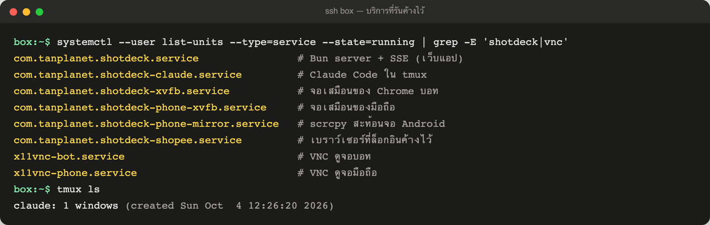
สั่งงานจากที่ไหนก็ได้ โดยไม่เปิดเครื่องให้คนอื่นเห็น
Tailscale เป็นแกนกลาง เข้า SSH ได้ด้วยกุญแจเท่านั้น ที่เหลือคือหน้าจอที่ออกแบบมาให้ใช้บนมือถือได้จริง
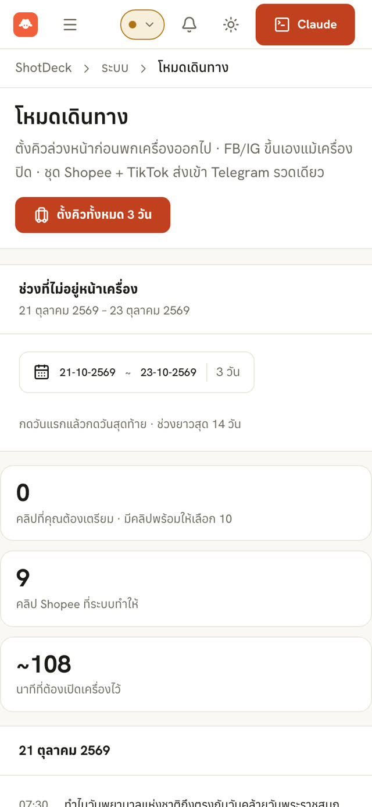
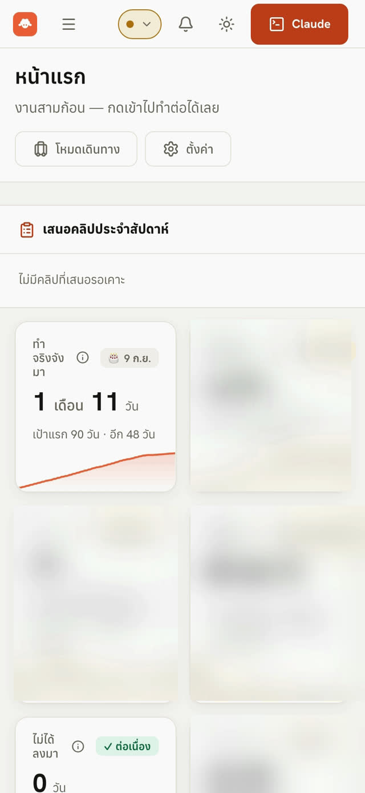
- พิมพ์
boxบน Mac ได้ ssh เข้า tmux session ที่มี Claude Code รออยู่ ปิดหน้าต่างไปแล้วกลับมาต่อได้ งานไม่หลุด - เว็บแอปสำหรับ iPhone Bun server อัปเดตสถานะสดผ่าน SSE ใช้ bottom sheet แทนหน้าต่างซ้อน กดได้ด้วยนิ้วโป้งข้างเดียว เปิดได้เฉพาะในเครือข่ายส่วนตัว
- เทอร์มินัลบนเว็บ ttyd ต่อเข้า tmux ที่ Claude รันอยู่ อยู่ข้างนอกก็พิมพ์สั่งเป็นประโยคธรรมดาจากมือถือได้
- จอเสมือนที่ซ่อนไว้ Chrome ของบอทรันบน Xvfb แบบล็อกอินค้างไว้ เพราะโหมด headless ถูกแพลตฟอร์มจับได้ ส่วนเวลาอยากดูว่ามันกำลังทำอะไร ก็เปิดผ่าน VNC
- ดูจอมือถือ Android แบบดูอย่างเดียว สะท้อนจอด้วย scrcpy ไว้ตรวจว่าการโพสต์ผ่านมือถือเดินถึงไหน โดยไม่เผลอไปกดอะไรแทรก
- เปิดออกนอกเครือข่ายแค่จุดเดียว ใช้ Tailscale Funnel เปิด endpoint เดียวเป็น HTTPS พร้อมกุญแจกำกับ เพราะอุปกรณ์บางตัว เช่น จอ ESP32 ไม่ได้อยู่ในเครือข่ายส่วนตัว
คลิปพากย์ — ผมตัดคลิป เครื่องทำที่เหลือ
คลิปที่มีเสียงพากย์ยังต้องมีคนตัดสินใจเรื่องภาพ ส่วนนั้นผมทำเอง หลังจากนั้นทุกขั้นเดินต่อเองจนโพสต์
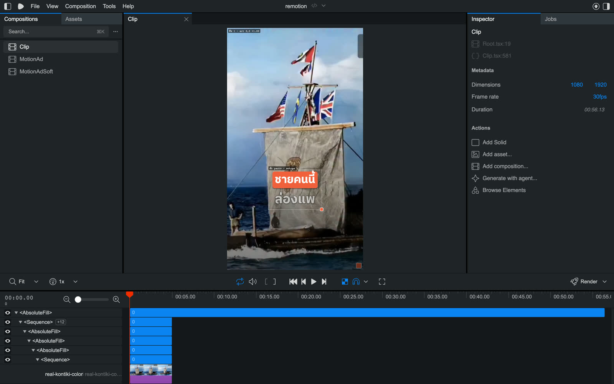
วางบท แล้ววางฟุตเทจลง Mac
ไฟล์ซิงก์ขึ้นเครื่องด้วย rsync ไม่ต้องอัปโหลดผ่านหน้าเว็บ
พากย์ไทยทีละบรรทัด แล้วถอดเสียงกลับมาตรวจ
ถอดเสียงด้วย faster-whisper large-v3 บน GPU เทียบกับบท ใช้พจนานุกรมคำอ่าน และปรับความดังทุกบรรทัดให้อยู่ที่ −16 LUFS
จัดวางใน Remotion Studio
ดูพรีวิวอย่างเดียว ยังไม่เรนเดอร์ จนกว่าผมจะบอกว่าใช้ได้
เรนเดอร์
คลิปยาวราว 73 วินาทีใช้ประมาณ 8 นาที หลังอัปเกรด Remotion เรนเดอร์เร็วขึ้น 15–21%
ตรวจก่อนปล่อย
preflight เช็กไฟล์ เสียง และขนาด ก่อนเข้าคิว
ตั้งเวลาและโพสต์เอง
ลงช่วงเวลาคงที่ วันธรรมดา 18:30 เสาร์อาทิตย์ 12:30
คลิปสินค้า — ไม่มีคนแตะเลยตั้งแต่ต้นจนโพสต์
คลิปแบบนี้ไม่มีเสียงพากย์ จึงตัดคนออกได้ทั้งหมด แล้วใช้ด่านตรวจอัตโนมัติแทนสายตา
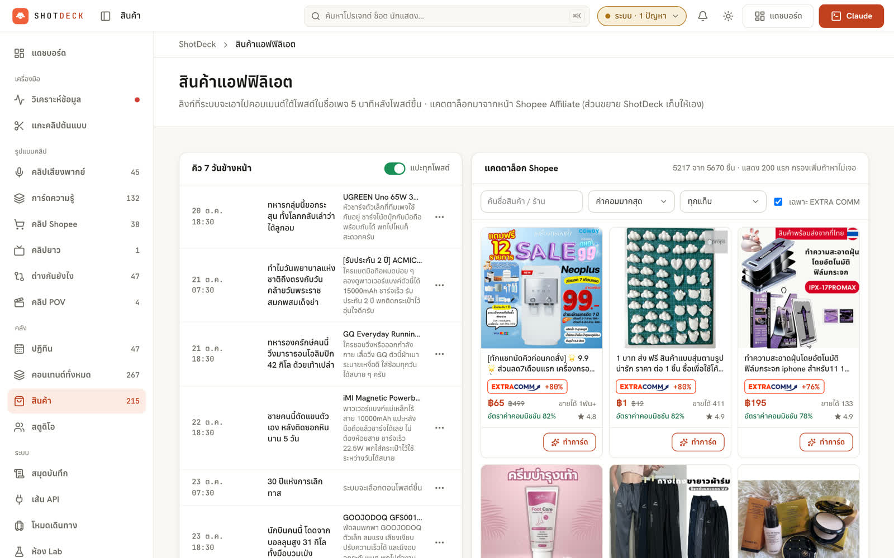
เลือกสินค้า
จัดอันดับจากแคตตาล็อก affiliate ราว 2,450 รายการ
ตัดพื้นหลังรูปสินค้า
ใช้ rembg ตัดเอาเฉพาะตัวสินค้า
ให้ AI วาดฉาก
ใช้โควตารายสัปดาห์ของแพ็กเกจที่จ่ายอยู่แล้ว ไม่จ่ายค่า API เพิ่ม
หมุนสูตรคลิป
สลับระหว่าง 5 สูตร ให้ฟีดไม่ซ้ำหน้าตาเดิมทุกวัน แล้วประกอบด้วยแม่แบบ Remotion
ตรวจ motion อัตโนมัติ
หาภาพกะพริบ และเช็กว่าตัวหนังสือไม่ล้นออกนอกพื้นที่ปลอดภัยของแต่ละแพลตฟอร์ม
โพสต์โดยไม่ต้องรออนุมัติ
ผ่านด่านตรวจก็โพสต์เลย ไม่ผ่านก็ไม่โพสต์
หนึ่งวันของเครื่อง
ทุกงานเป็น systemd user timer แยกตัว พังตัวเดียวไม่ลากตัวอื่นพังตาม
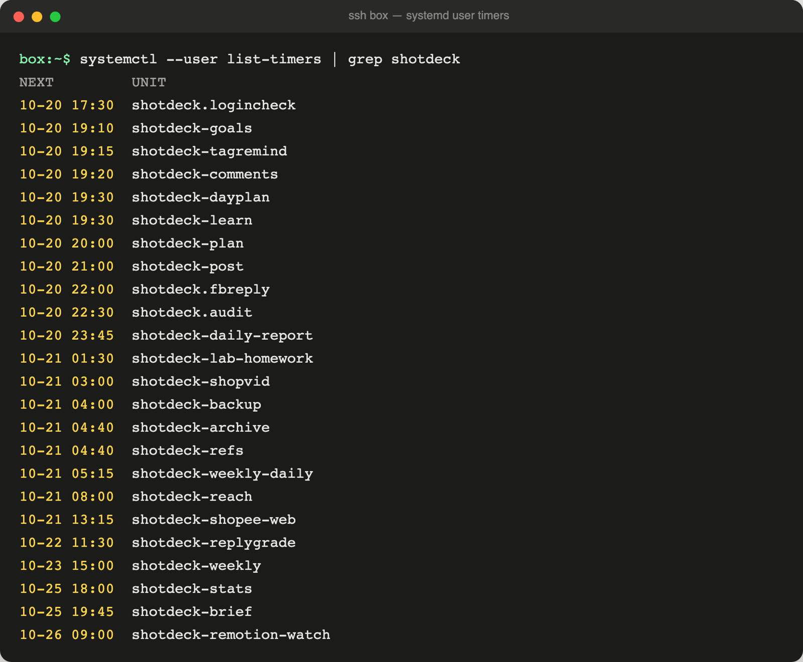
โพสต์ 5 แพลตฟอร์ม ด้วยวิธีที่ต่างกัน
ไม่ได้เลือกวิธีที่เท่ที่สุด แต่เลือกวิธีที่แต่ละแพลตฟอร์มไม่ลงโทษ
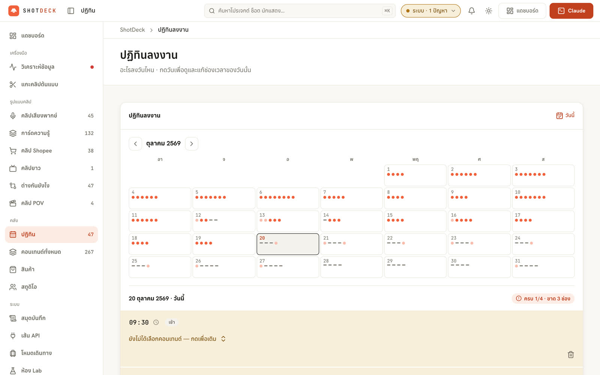
- Facebook Reels ผ่าน API หรือหน้าสร้างโพสต์ในเบราว์เซอร์ ส่วน Instagram ใช้หน้าสร้างโพสต์อย่างเดียว
- YouTube Shorts ผ่านเบราว์เซอร์ ไม่ใช้ API เพราะคลิปที่อัปผ่านแอปที่ยังไม่ผ่านการ audit จะถูกล็อกเป็นส่วนตัว
- TikTok และ Shopee Video ผ่านมือถือ Android ตัวจริง สั่งผ่าน adb บน USB hub ที่มีไฟเลี้ยงของตัวเอง มือถือไม่แบตหมดกลางคืน
- ลิงก์ affiliate อยู่ในคอมเมนต์แรกที่ปักหมุด ไม่ใส่ในตัวโพสต์เลย
- กันโพสต์ซ้ำหลายชั้น ก่อนจะลองวิธีสำรอง ระบบเปิดหน้าเพจจริงดูก่อนว่าคลิปขึ้นไปแล้วหรือยัง ไม่เชื่อแค่สถานะที่ตัวเองจำไว้
ซ่อมตัวเองสามชั้น ก่อนจะมาปลุกผม
ตอนอยู่ข้างนอก ข้อความแจ้งเตือนทุกข้อความคือเวลาที่ต้องหยุดเที่ยว จึงตั้งให้มันไปถึงผมช้าที่สุดเท่าที่จะทำได้
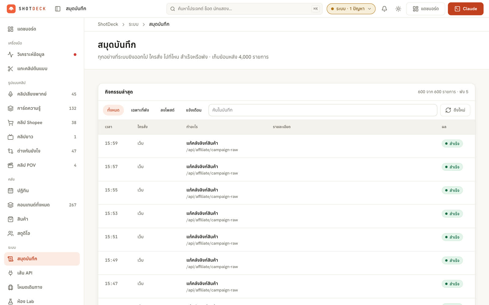
ปัญหาที่เจอตอนของจริงเดินอยู่
เกือบทุกข้อเป็นเรื่องที่ไม่เกิดบน Mac และไม่มีใครเตือนไว้ก่อน
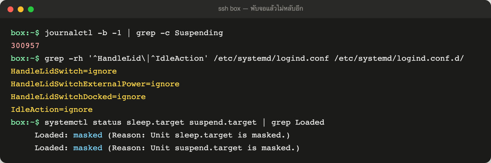
BIOS ไม่ยอมบูตจาก USB เกือบทุกอัน และติดตั้งเสร็จแล้วขึ้น No Bootable Device
แฟลชไดรฟ์ที่เขียนอิมเมจแบบปกติไม่ขึ้นในเมนูบูต พอติดตั้งผ่าน เปิดเครื่องใหม่ก็ไม่เจอระบบที่เพิ่งลงไป
พับจอแล้วเครื่องวนหลับ-ตื่น จน log มี "Suspending…" 300,000 บรรทัด
โน้ตบุ๊กถูกตั้งมาให้พับจอแล้วหลับ เครื่องที่ต้องเปิดตลอดจึงพยายามหลับซ้ำไปเรื่อย ๆ ทั้งคืน
คืนแรกโพสต์พลาด 5 จาก 6 คลิป เพราะคีย์ลัดเลือกทั้งหมดผิดระบบ
สคริปต์เขียนบน Mac ใช้ Meta+A ล้างช่องข้อความ บน Linux ปุ่มนี้ไม่ได้เลือกทั้งหมด ข้อความเก่าจึงค้างอยู่ในช่อง
ControlOrMeta+A ให้ใช้ปุ่มที่ถูกตามระบบที่รัน สคริปต์เดียวกันรันได้ทั้งสองเครื่องrembg กินหน่วยความจำ 8.9 GB จนงานตอนเช้ามืดล่ม
โหลดโมเดลใหม่ทุกครั้งที่ตัดพื้นหลังหนึ่งรูป เครื่องมี RAM 16GB งานอื่นที่รันพร้อมกันจึงไม่เหลือที่
Chrome แบบ headless ถูกแพลตฟอร์มจับได้
เบราว์เซอร์ที่ไม่มีหน้าจอจริงมีร่องรอยต่างจากคนใช้งานปกติ การโพสต์ผ่านหน้าเว็บจึงไม่ผ่าน
Tailscale Funnel ไม่ส่ง header ที่ใช้เช็กว่ามาจาก Funnel
ตั้งใจให้ endpoint ที่เปิดออกนอกตรวจว่าคำขอมาทาง Funnel แต่ header นั้นไม่เคยมาถึงเซิร์ฟเวอร์เลย
GPU นั่งว่างอยู่หลายวันหลังย้ายเครื่อง
เลือกเครื่องที่มีการ์ดจอ แต่งานช่วงแรกใช้แค่ CPU การ์ดจอจึงเป็นของที่ซื้อมาแล้วไม่ได้ใช้
ตัวเลขที่ใช้วัดว่าเครื่องนี้คุ้ม
115 คลิปใน 3 สัปดาห์แรก แบ่งเป็นคลิปสินค้าอัตโนมัติ 38 คลิปพากย์ 21 การ์ดภาพนิ่ง/ข้อมูล 42 และคลิปเปรียบเทียบ 14
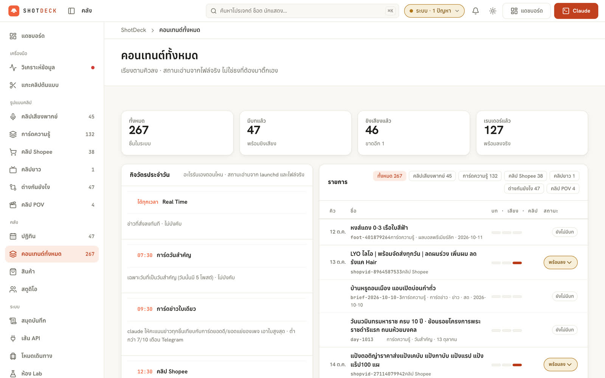
ขอบเขตที่ตั้งใจไม่ทำ
ระบบที่ทำเองทั้งคืนโดยไม่มีคนดู ต้องมีเส้นที่มันไม่ข้ามเอง
- ไม่อัปเกรด Remotion เอง ทุกวันจันทร์สรุปมาให้อ่านว่าเวอร์ชันใหม่มีอะไร ผมเป็นคนตัดสินว่าจะอัปเมื่อไร เพราะแม่แบบทุกตัวพึ่งมันอยู่
- คลิปพากย์ไม่เรนเดอร์จนกว่าผมจะบอก Remotion Studio มีไว้ดูพรีวิว การเรนเดอร์ใช้เครื่องเกือบ 10 นาที ไม่ควรเสียไปกับคลิปที่ยังไม่ผ่าน
- ไม่ใส่ลิงก์ในตัวโพสต์ ลิงก์อยู่ในคอมเมนต์แรกที่ปักหมุดเท่านั้น
- ไม่ใช้ API ที่ทำให้คลิปถูกล็อก YouTube โพสต์ผ่านเบราว์เซอร์แทน แม้จะต้องดูแลมากกว่า
- Claude ช่วยซ่อมได้ไม่เกิน 6 ครั้งต่อวัน มีเพดานไว้กันการวนแก้ปัญหาเดิมทั้งคืน เกินนั้นต้องเป็นคนตัดสิน
- ไม่แก้งานบนสำเนาที่ Mac ทุกอย่างแก้บนเครื่องจริงผ่าน ssh ของจริงมีที่เดียว